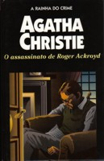

O Assassinato de Roger Ackroyd
The Murder of Roger Ackroyd
O assassinato do rico Roger Ackroyd, morto a punhaladas com uma adaga tunisiana, é a terceira de uma série de estranhas mortes, que despertam a atenção da solteirona e sagaz Caroline Sheppard, irmã do médico da cidade e narrador deste romance. Intrigada, Caroline resolve investigar o caso e descobrir se as três mortes têm alguma ligação. Para isso, ela conta com a ajuda de seu novo e excêntrico vizinho: o detetive belga Hercule Poirot. Escrita em 1926, O Assassinato de Roger Ackroyd é uma das mais famosas histórias da rainha do mistério.
Gabriela Pires: Provavelmente o melhor de todos os livros da célebre escritora, onde Hercule Poirot elucida inacreditavelmente o assassinato de Mr. Ackroid, que estava prestes a descobrir a identidade do chantagista de sua falecida amante, achando onde menos se podia esperar o autor desta morte terrível.